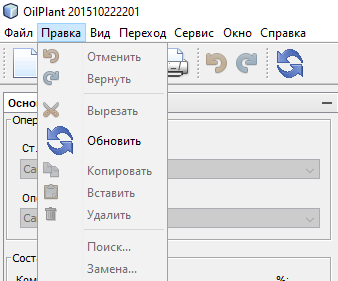

Описание меню "Правка"
Меню "Правка"
предназначена для выполнения операций с буфером обмена.
Соответствующие команды доступны также и в панели инструментов
Внешний вид меню "Правка"
представлен ниже:

При помощи меню "Правка"
можно осуществлять следующие операции с буфером обмена:
"Вырезать"
- вырезает выделенный фрагмент текста в буфер обмена"Копировать"
- копирует выделенный фрагмент текста в буфер обмена"Вставить"
- вставляет текст из бефера обмена в указанное место"Удалить"
- удаляет выделенный фрагмент текста
Также при помощи меню "Правка"
можно осуществлять операции управления действиями пользователя, а именно:
"Отменить"
- отменяет последнее действие редактирования пользователя. При многократном выборе отмены отменяет то количество действий,
сколько раз пользователь выбрал операцию "Отменть"
."Вернуть"
- возвращает отмененное пользователем действие. При многократном выборе возврата возвращает то количество действий,
сколько раз пользователь выбрал операцию "Вернуть"
.
Операция "Обновить акт"
подробно расписана в соответсвующем разделе Обновить акт.